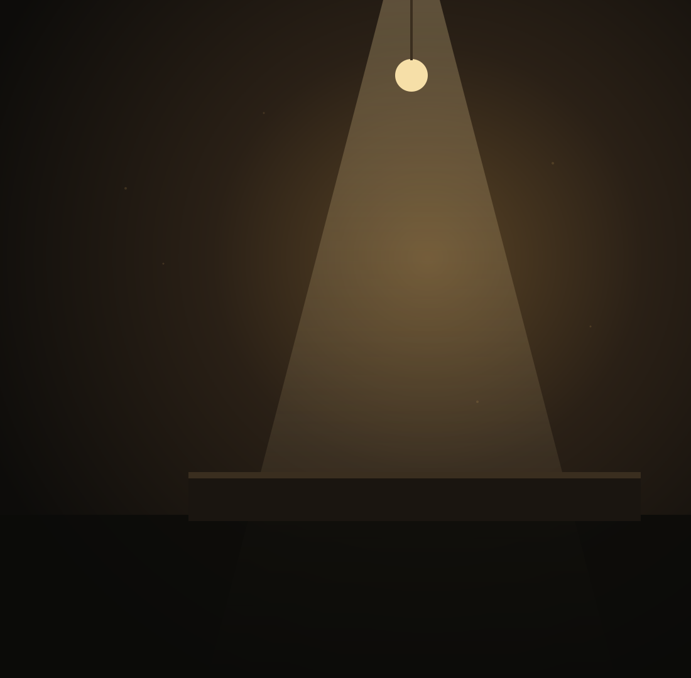

Just the slides, full screen. No controls, no notes, nothing to hide.
Your script · next slide · timer
The one you keep
Your script, the next slide, a timer, and every control.
Writing a deck
A slide is a section
<!-- everything inside the section is the slide -->
<section data-title="Two windows">
<p class="eyebrow">How it works</p>
<h2>Two windows</h2>
<!-- and the aside is what you say -->
<aside>Stagehand runs a talk across two windows.</aside>
</section>
One thing at a time
Reveals
Add class="reveal" to anything on a slide.
Write (click) in your script where it should appear.
Next reveals them in order, then moves on.
Pointing at things
Spotlight
Add only to a reveal and it shows for its own click, then steps aside for the next. Put a ring on it to circle part of a diagram as you talk.
Inbox
Review
Shipped

Layouts
Photos drift
Full bleedclass="photo"Right sideclass="photo right"Darkerclass="photo shade"Hold stillclass="photo still"
Making a point
One number at a time
48%
of people with a regular spot talk to someone new at least monthly
28%
of people without one
Sample figures, from the deck Stagehand was built for
Optional
Sound and narration
A bed under a slidedata-sound="room.mp3"A voice over a slidedata-voice="intro.mp3"A voice over the titlethe same, on the title card
Beds crossfade between slides and dip while a voice plays. Volume and mute live in your window.
On the day
Presenting
Click
The shared window once: sound on, your window opens
Click again
Full screen
→ or a clicker
Next, in either window
F · M · P
Full screen, mute, open your window
Your turn
Make your own
Drop or paste your Markdown on the Stagehand start page.
Or hand it to Claude with the Stagehand skill.
Or copy the repository and write the HTML yourself.